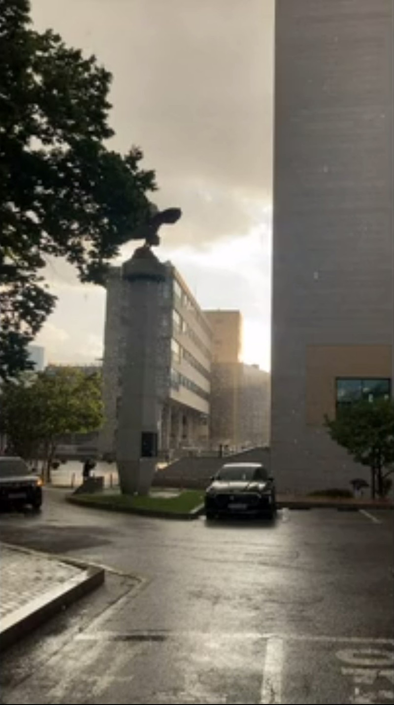

매거진 삼삼오오 · 연재
일과 영화 (daily) work and film(ing) - 김나영 감독

장르 불문! 대구독립영화
"십여 년 동안 생활을 위한 일과 영화 만들기 사이를 오가며 느낀 것을 이야기해보려 합니다.
때때로 일을 그만두거나 그보다 자주 영화와 멀어지기를 반복하면서
불안정한 직업과 불완전한 영화 세계를 헤매게 된 경위에 대한 이야기가 될 것 같습니다."
지난 9월 개최된 <오오극장 관객프로그래머 영화제: 지금의 독립영화라는 것>
김나영 감독의 강연 『일과 영화』 내용을 공유합니다.
일과 영화
(daily) work and film(ing)
2023.09.24.
대구 오오극장
#
안녕하세요, 저는 오늘 <일과 영화>라는 제목으로 오오극장에서 여러분과 이야기 나누게 된 김나영이라고 합니다. 준비한 이야기를 시작하기 전에 먼저 저에 대한 간단한 소개를 해야 할 것 같은데요, 막상 이 자리에서 저를 소개하려고 하니 약간의 어려움이 있다는 사실을 깨달았습니다. 저는 부산에서 영화 비평 활동을 하고 영화 만드는 작업을 간헐적으로 해왔지만 영화 비평으로 등단을 한 것도 아니고, 제가 연출한 영화가 평단의 특별한 주목을 받은 적이 있는 것도 아니어서 아마 영화에 웬만큼 관심이 있는 사람이라 해도 제가 만든 영화를 보거나 제 이름을 들어봤다거나 하는 경우는 많지 않을 것 같아요. 그래서 여러분에게는 아마 이 자리에서 제가 하려는 이야기를 짐작할 수 있는 정보가 거의 없을 거예요.
저에 대해 소개하기 위해, 저를 소개하는 것이 왜 어렵게 느껴지는지 이야기하기 위해 조금 오래된 기억을 하나 떠올려 꺼내 보는 것이 좋을 것 같습니다. 2016년에 <시험 후>라는 단편의 촬영을 마치고 편집실에 처박혀 고통받고 있던 중에 부산독립영화협회에서 발간하는 부산독립영화 비평지 『인디크리틱』에서 마련한 부산 여성 영화감독들의 대담 자리에 초대된 적이 있습니다. 당시 온라인에서는 페미니즘 리부트 물결이 막 일기 시작했고, 3,4년 전부터 부산독립영화제에서 여성감독들의 영화가 연이어 크고 작은 상을 받던 때에 마련된 시의적인 기획이었던 것 같아요. 저는 다른 세 명의 여성감독과 여성감독으로 호명된다는 것, 지역에서 영화를 만든다는 것에 대한 이야기를 나누게 됐어요. 대담은 곧 지역 여성 영화감독들이 겪고 있는 어려움에 대한 것으로 이어졌습니다. 여성으로서 영화를 만들면서 겪는 불편부당한 일들, 왜 지역의 영화인들이 서울로 향할 수밖에 없는지, 그럼에도 영화 만들기를 지속하겠다는 열의 사이에서 저는 영화 만들기를 지속하는 것 자체에 회의적인 마음을 토로했습니다.
그때 저는 몸과 마음이 지쳐 있었어요. <시험 후>는 3회차 촬영에 모두 낮 촬영이었고 주요 인물은 둘 뿐인 제작 규모가 단출한 영화였는데도 완전히 지쳐 버렸습니다. 저는 감독으로서 현장을 통솔하고, 결정을 내리고, 변수에 대처할 능력이 없었습니다. 마지막 쇼트를 촬영할 때, 제가 “오케이!”를 외치자 영화의 전당 제작 워크숍을 통솔하던 선생님이 “정말 ‘오케이’예요?”라고 묻던 것이 생각납니다. 저는 곧장 대답하지 못했습니다. 머릿속의 장면과 가장 비슷하게, 때때로 그보다 더 나은 장면이 만들어지기를 기다리며 같은 그림을 무한정 반복하고 있는 기분이었습니다. 언제까지? 머릿속에 그려오던 장면은 점점 흐릿해지기 시작하고 “오케이” 사인을 기다리는 스태프들과 무엇을 다르게 연기해야 할지 제대로 지시받지 못한 배우가 지쳐가는 모습만 뚜렷하게 보이기 시작했습니다. 머릿속에 남은 건 이런 물음뿐이었어요. 언제까지 계속해야 하지? 당시의 제 마음을 복기하다가 며칠 전 퇴근길의 기억이 떠올랐습니다.
며칠 전에 퇴근하려고 사무실을 나서려는데 갑자기 폭우가 쏟아지는 거예요. 우산이 없어 당황한 저에게 동료 직원이 “양우산이라 괜찮을지 모르겠지만…“이라고 말하며 우산을 빌려줬습니다. 저는 빌린 양우산을 쓰고 건물 밖으로 나왔고 그때 마주친 장면이 이상하고 아름답게 느껴졌습니다. 맑은 하늘과 석양을 배경으로 폭우가 쏟아지는 것을 바라보다가 핸드폰을 꺼내 영상을 찍었습니다. 같은 자리에 서서 별다른 차이 없는 장면을 반복해서 찍다가 등이 흠뻑 젖고 있었다는 것을 깨달았습니다. ‘이제 그만 찍고 집으로 돌아가야겠다...‘고 생각했고 촬영을 멈췄습니다.
이 자리에서 그때 찍은 영상을 함께 보고 싶어서 가져왔는데요, 지금 틀어주실 수 있을까요?

#
다시 2016년으로 돌아가서… 앞으로의 계획에 대한 이야기를 하면서 그 자리에 모인 이들에게 저는 “지금 편집 중인 영화가 제 유작일 것이며, 앞으로 영화를 만든다고 해도 오랜 기간 준비해 다수의 인원과 고가의 장비를 동원하는 지금과 같은 방식으로 제작하지는 않을 것”이라고 말했습니다. 그리고 저는 “직업 영화감독이 될 수 없고 되고 싶지도 않으며, 생활에 필요한 직업을 유지할 수 있는 선에서 저에게 허락되는 방식으로 작업을 하고 싶다”고도 덧붙였습니다. 제 대답에 누군가 “비싼 취미생활이 되겠다”며 가벼운 농담을 던졌고 누군가는 진지하고 심각한 얼굴이 되어 그런 방식으로는 영화 제작의 책임감이 떨어지지 않겠냐고 반문했는데 저는 제대로 대답하지 못하고 우물거리고 말았습니다. 이 자리에서 저를 소개하는 것의 난감함은 2016년의 대담 자리에서 제가 느꼈던 난감함과도 연결되는 것 같습니다.
저는 저 자신을 영화감독이라고 지칭하기가 무척 꺼려지는데요, 이 마음에 대해 설명하기 위해 영화감독이라는 이름이 함축하고 있는 것-가령, 단순한 정의에서부터 제도와 욕망까지-에 대한 이야기를 할 수도 있을 거예요. 영화비평가를 영화에 대한 비평 작업을 하는 사람, 영화감독을 영화를 연출하는 사람이라고 단순히 정의할 수 있다면 영화에 대한 비평을 쓰고 영화를 만드는 사람을 모두 영화비평가나 영화감독이라고 할 수 있다고 생각하는 사람들도 있고, 반대로 영화에 대한 모든 감상을 비평이라고 부르거나 인터넷에 떠도는 모든 영상을 영화라고 할 수 없다고 생각하며 영화감독이나 비평가라는 이름에 일반인들과 다른 전문성이 있다고 믿고 그들의 전문성에 인정과 지위를 부여하는 사람들도 있습니다. 그들은 전문가들이 예술을 예술로서 성립할 수 있는 요소를 찾는 작업을 함으로써 누군가는 “도살장“이라는 과격한 방식으로 표현하기도 한 선별 시스템이 요구된다고(혹은 피할 수 없는 현상이라고) 생각하기도 합니다.
이들의 입장에 일정 부분 동의하면서도 전문가의 자격과 선별의 기준은 어떻게 되는지, 그 시스템이 잘 돌아가고 있는지 끊임없이 비판하고 질문하는 이들도 있습니다. 이런 문제의식은 영화학교와 영화제, 공공의 예술 지원 등 영화의 외부가 영화의 정의를 구성하는 힘으로 작용하고 있으며, 지금의 제도적 장치들이 영화의 내×외연을 균질한 것으로 만든다고 보고 어떻게 하면 점점 더 좁아지는 그물망에 구멍을 낼 수 있을지 실천적, 이론적으로 꾸준히 발언하는 분들에 의해 이미 익숙하게 느껴지는 분들도 있을 것 같아요. 저 역시 관심과 고민을 이어오는 문제고 더 많은 자리에서 더 풍부한 이야기가 필요하다고 믿지만, 이 자리에서 저 혼자 이야기하기엔 저에게는 아직 생각도 부족하고 어려운 문제이기도 해서 저는 영화와 영화감독이라는 문제를 다른 관점에서 생각하게 했던 개인적인 경험을 공유하는 정도로 이야기해볼까 합니다.
-
<시험 후>를 만들고 약 3년이 지났을 무렵 부산의 현대음악 작곡가들과의 협업 프로젝트에 참여하게 되었는데, 그때 저는 온라인 슈퍼에서 사람들이 화면을 보며 ‘클릭’이나 ‘터치’로 장바구니에 담은 물건의 이미지를 ‘실제’로 장바구니에 담고 포장하는 일을 하고 있었습니다. 이른 아침에 시작해 오후에 끝나거나 늦은 오후에 시작해 밤늦게 끝나는, 스케줄이 다소 들쑥날쑥하고 육체적으론 꽤 고된 일이었습니다. 저는 제가 할 수 있는 작업의 형태에 선택권이 그리 많지 않다는 것을 깨달았습니다. 정해진 시간 안에 새로운 무언가를 촬영해 작업하기엔 저의 시간과 육체적 에너지 모두가 턱없이 부족했던 것입니다.
저는 제 상황에서 할 수 있는 작업 방식이 무엇일지를 먼저 고민했습니다. 그것은 제가 예전부터 관심을 가지고 있던 오디오 비주얼 필름 크리틱 혹은 비디오 에세이의 방식으로, 기존에 존재하는 영상을 변형하거나 재배치해 영화가 원래 속해 있던 의미의 자장에서 벗어나 새로운 맥락을 얻고 재해석되도록 만드는 형태의 작업이었습니다. 저는 어떤 영화에 영감을 받아 작곡했다는 작곡가의 말에 힌트를 얻고 편집 프로그램의 타임라인과 오선지의 형태적 유사함에 주목해 마치 음악을 영화로 옮겨 적는 듯한 느낌이 되기를 바라며 작업을 구상했습니다. 사랑을 테마로 한 음악에 맞게 사랑에 관련된 장면들을 음표처럼 타임라인 위에 배치한다는 저의 구상은 결과적으로 그다지 좋은 작업이 되지 못했습니다. 사랑에 관한 영화라는 장면 선별의 기준이 너무 방대했고 장면을 연결하는 논리 또한 너무 빈약했기 때문입니다.
하지만 2016년의 대담에서 제가 했던 말(“직업 영화감독이 될 수 없고 되고 싶지도 않으며, 생활에 필요한 직업을 유지할 수 있는 선에서 저에게 허락되는 방식으로 작업을 하고 싶다”)을 의식하고 있었던 것은 아니었음에도 일정한 직업 활동을 병행하면서 하나의 작업을 완성해냈다는 사실은 저에게는 꽤 고무적인 경험이었습니다. <시험 후>를 만든 이후 드문드문 작업을 한 적이 있었지만 일과 영화 사이에서 하나의 작업을 완성한 것은 처음이었습니다. 저는 대학을 일찍 그만둬버렸고 특별한 기술이 있는 것도 아닌데다 영화를 보거나 강의를 듣는 것에 방해되지 않거나 방해가 되면 쉽게 그만둘 수 있는 일만 해왔던 탓에 어느덧 변변한 자격증도, 직업적 경력도 없는 30대가 되어 있었어요. 더는 파트타임 일자리를 구하는 것도 쉽지 않은 상황에서 영화 때문에 일을 그만두거나 일 때문에 영화를 포기하지 않을 수 있도록 일과 영화 사이의 균형을 잡는 일이 저에게는 이전보다 더 중요한 문제일 수밖에 없었습니다. 2020년에 저는 영화적으로는 스스로 만족하지 못한 작업을 하고 말았지만 일과 영화 둘 중 하나를 포기하지 않고 한 편의 작업을 마무리했다는 점에서는 성공했다고 할 수 있었습니다.
직업을 사전적 정의에 따라 “생계를 유지하기 위하여 자신의 적성과 능력에 따라 일정한 기간 동안 계속하여 종사하는 일”이라고 한다면, 직업 영화감독이 될 수 없다는 것은 영화를 만드는 것으로는 생활에 필요한 돈을 벌 수 없다는 것, 되고 싶지도 않다는 것은 돈을 벌기 위한 영화를 만들고 싶지 않다는 의미이기도 할 것입니다. 사실 돈을 벌 수 있는 영화를 만드는 것은 무척 소수의 감독이라는 사실은 누구나 알고 있을 텐데요, 영화를 만들면서 어떻게 생계를 유지할 수 있을까요? 많이들 알고 계시겠지만 한국예술인복지재단에서는 “창작지원금”이라는 제도를 운용하고 있습니다. 창작지원금을 받기 위해서는 “예술 활동 증명”, 일명 “예술인 증명”이라고 불리는 시스템을 거쳐야 합니다.
현대음악 작곡가와의 협업 프로젝트가 끝난 후 마침 “예술인 증명”의 “유효기간”이 만료되어 더 이상 “예술인”으로 인정받지 못할 시점이 도래했던 저는 최근의 작업을 “예술 활동”의 근거로 삼아 제가 “예술인”임을 증명하고자 했습니다. 아마 자신이 예술인이라며 서류를 제출하는 사람들에 비해 그들이 정말 예술인인지 제출된 서류를 검증하고 판단하는 인력이 턱없이 부족한 탓이었을 텐데 제가 예술인인지 아닌지 판정이 내려지기까지 약 4개월의 시간이 소요되었고, 4개월 후 저는 별다른 설명 없이 “예술 활동 증명”에 실패했다는 통보를 받게 되었습니다. 제출했던 서류에 어떤 문제가 있었던 것인지 궁금했던 저는 ‘고객센터’에 반려 사유를 문의했습니다. 제가 받은 답변은 대강 이런 것이었는데요, 저의 작업이 상영되었던 곳이 영화관이 아닌 문화회관(공연장)이었고 1회 상영으로 끝났기 때문에 그것을 영화라고 볼 수 없다. 결과적으로 저는 제가 “예술인”임을 증명하는 일에 실패하고 말았습니다.
#
실제로 저는 영화를 만드는 시간보다 제 개인의 삶을 살아가기 위해 영화와 무관한 직업 생활에 들이는 시간이 훨씬 많기 때문에 삶의 대부분은 영화감독 김나영이 아니라 ㅇㅇ업무 담당자 김나영으로 호명되는 경우가 많습니다. 장면을 구상하고 연결하는 것에 대해 고민하는 것보다 숫자가 틀리진 않았는지, 내가 쓴 메일이 사회적 예의에 어긋나지 않는지 고민하는 것에 더 많은 에너지를 쏟고 있어요. 그렇다고 해서 영화를 만드는 일이 정말로 “비싼 취미활동“이라고 생각하지 않습니다. 사실 오늘 이야기하는 내용의 상당 부분은 마산에서 영화를 만들고 영화제를 기획하는 등의 활동을 하는 김준희 감독님으로부터 제안받아 『M 다시보기 플러스』에 쓴 글을 보충한 것에 가까운데요, 김준희 감독님과는 작년에 창원에서 활동하는 고은 작가를 포함해 세 사람이 함께 ‘사랑’을 주제로 한 옴니버스인 ‘사랑 프로젝트’를 함께 만들기도 했어요. 당시에 저는 지난 작업과 마찬가지로 오디오 비주얼 필름 크리틱 형태의 작업을 기획했습니다. 지난 작업에서의 아쉬움을 보완하고 싶다는 마음도 분명 컸지만, 이는 역시 저의 생계 활동과 주어진 예산 등을 고려한 형태의 작업이기도 했어요. 저는 지난 작업보다 조금은 나아진 결과물을 만들었다고 느꼈지만 약속된 시간 안에 작업을 마무리하기 위해 결국 일을 그만둘 수밖에 없었습니다. 이것을 단지 “비싼 취미활동”이라고 말할 수는 없을 것 같아요.
반대로 나의 진정한 직업은 영화감독이고 일은 단지 돈을 벌기 위한 수단일 뿐이라고 생각하지도 않습니다. 저는 제가 하는 일이 단지 생활을 유지하기에 충분한 돈을 벌기 위한 일이기만 하지는 않았으면 좋겠어요. (물론 그렇게 생각할 때도 있었지만…) 조금 부족한 돈을 받더라도 저의 가치관에 어긋나지 않고 보람을 느낄 수 있는 일을 하고 싶습니다. 그렇다면 저는 회사에 다닐 땐 회사원, 영화를 찍을 땐 영화감독, 엄마의 딸, 누군가의 동생, 애인… 이런 식으로 영화감독 역시 한 인간의 정체성이 그러한 것처럼 그가 점유한 사회적 위치와 관계에 따라 유동적이라는 말을 하려는 것일까요? 그것도 아닌 것 같습니다.
제가 만든 것을 영화로, 저를 영화감독이라고 제도적으로 인정 받기 위한 형태의 작업을 저는 하고 싶지 않고 할 수 없습니다. 그런 의미에서 저에게는 영화평론가나 영화감독이 되고 싶은 욕망이 없다고 할 수 있을 것입니다. 이것을 이름을 가지고 싶은 욕망 대신 쓰기와 만들기 자체에의 욕망이라고 말할 수 있을까요? 조금 복잡한 문제인 것 같습니다. 왜냐하면 쓰기와 만들기의 욕망이 단순히 자기만족의 영역에서만 작동하는 것은 아니라고 생각하기 때문입니다. 누군가에게 보이고 싶다는 욕망 없이 쓰기와 연출의 욕망이 작동할까요? 저에게는 대답하기 어려운 문제입니다. 저는 제가 좋아하고 보고 싶은 것을 만들어 다른 사람들과 공유하고 싶은 마음으로 무언가를 만듭니다. 좋아하는 것을 누군가와 함께 좋아하는 것은 즐거운 일이니까요. 하지만 저는 제가 만든 것을 어떻게 사람들에게 보일 수 있을지 모르겠습니다. 물론 유튜브 같은 온라인 플랫폼에 공개하는 방식도 고려해볼 수 있겠지만 (저처럼 저작권을 마구잡이로 위배하며 만든 영상은 업로드 단계에서부터 곤란을 겪기도 하고) 애초에 그것의 존재를 알거나 보려는 사람이 있을까요? 한 편의 영화가 사람들과 만날 수 있도록 하는 장 속에 진입해야만 그것이 영화라고 인정받는 이 갇힌 구조에서 벗어날 방법이 있을까요?
저는 제가 제도 밖에서 완전히 자유로운 방식으로 영화를 만들고 있다고 생각하지 않습니다. 저는 제도 대신 오히려 ‘일’이라는 또 다른 제한 속에서 영화를 만들고 있습니다. 물론 여기에도 지속의 문제가 있습니다. 언제까지 계속할 수 있을까? 언제까지? 영화감독 김나영이라는 형태로 이 자리에 앉아 저를 소개하는 것의 난감함으로부터 이야기를 시작했지만, 오오극장에서 나눌 이야기를 떠올리고 제가 촬영한 것을 이어붙이면서 저는 제가 만든 것을 단순히 ‘핸드폰 영상’의 덩어리라고 생각하지 않는다는 것을 깨달았습니다. 그러나 제도적으로 구축된 영화라는 궤도에 안착하지 못하고 영화가 되지 못한 영상들을 무엇이라고 불러야 할까요? 이들은 어디로 흘러가는 걸까요? 저는 저에게 주어진 환경 혹은 제가 선택한 조건인 ‘일과 영화’를 (‘하루 일과’라고 할 때의) ‘일과 영화’로 바꿔 말해볼 수도 있지 않을까 하는 생각을 해보았는데요, 아까 보여 드린 영상을 가지고 만든 것을 함께 보면서 이것을 영화라고 부를 수 있을지, 언제까지 계속할 수 있을지 여러분과 이야기 나눠보고 싶습니다.